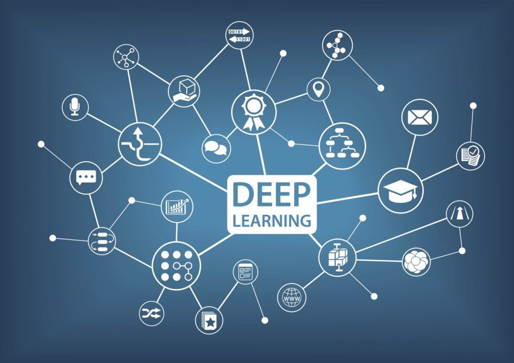
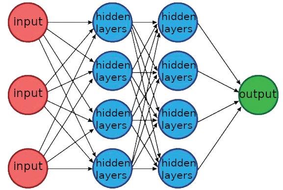

Comment fonctionne le deap learning ?

Le deep learning sert à faire des algorithmes plus intelligents, capable de résoudre des problèmes humains, comme identifier sur une photo l’animal présent. Pour cela il a besoin de donnés à partir dès quel il fait une prédiction. Pour fonctionner il a besoin d’apprendre, et au début de son apprentissage, il fait beaucoup d’erreurs.
Son fonctionnement est similaire à celui d’un cerveau, il est constitué d’un réseau de neurones, à qui on donne des données, en input (entrées), qui passeront par des hidden layers (couches cachées), et qui ressortirait par des outputs (sortis), chaque neurone applique un changement aux valeurs qu’ils obtiennent, jusqu’à en ressortir un final, qui sera le résultat.

Pour lui faire apprendre, on lui fait prédire des résultats déjà connus, et on lui dit de se corriger en modifiant les différents paramètres en cas d’erreur. Par exemple, on y rentre une photo de chat, il nous l’analyse, et nous ressort que c’est un oiseau, on lui dit que c’est faux, il corrige ses paramètres, jusqu’à ce que le résultat soit chat, et cela répétait énormément.
Voilà comment fonctionne le deep learning !